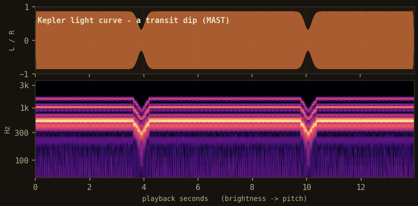
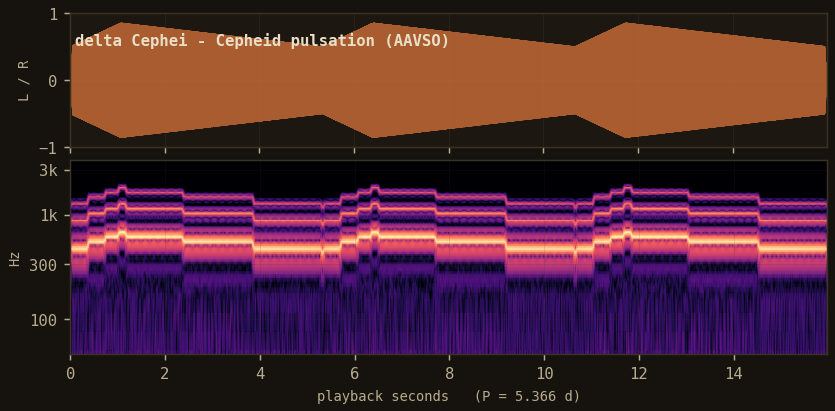
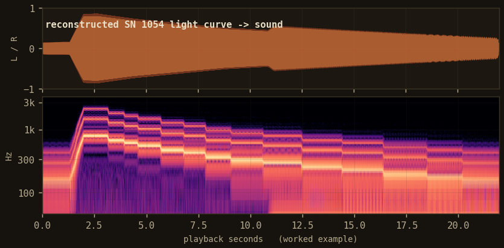

Guides / Tutorial
Three light curves, three sounds
We start on modern, quantitative data, a transit and a pulsating star, so the mapping is easy to check against something you already trust. Then we apply exactly the same code to a thousand-year-old record.
Every example follows the same three steps: build a LightCurve, configure a Sonifier, call render. Nothing about the historical record needs special handling; it is a light curve like any other, with wider error bars. That is the argument the library is built to make.
pip install "xuanji[audio]". Each snippet is self-contained and writes a .wav next to a .png plate. The players below are the rendered output.
1. A Kepler transit, brightness to pitch
A planet crossing its star dims the star by a fraction of a percent, twice here, once per orbit. On a plot it is a shallow notch. Mapped to pitch, the dip is a clean downward bend you cannot miss.
import xuanji as xj from astropy.io import fits # a detrended Kepler light curve (time in days, normalized flux), from MAST t, flux = xj.data.load_kepler("kplr-011446443") lc = xj.LightCurve(times=t, flux=flux, label="Kepler transit") son = xj.Sonifier( pitch=xj.BrightnessToPitch(f_lo=220, f_hi=1760, scale="flux"), tempo=xj.TimeToTempo(seconds=13), ) audio = son.render(lc) audio.write("transit.wav") xj.plot(lc, audio).savefig("transit.png", dpi=150)

plate · two transits appear as two sharp downward glides. Brightness maps to pitch; nothing else moves.
What you hear. A steady tone at the star's baseline brightness, interrupted twice by a fast dip and recovery. The two dips sit at the orbital period. The depth of the bend is the transit depth, so a deeper planet would drop the pitch further.
2. delta Cephei, a periodic signal folded to tempo
Cepheid variables pulse on a fixed clock. delta Cephei has a period of 5.366 days. Its brightness rises fast and falls slow, the classic sawtooth. Sonified, the period is audible as a repeating swell, and TimeToTempo lets you set how many cycles land in the clip.
import xuanji as xj # visual magnitudes for delta Cephei, phase-folded, from the AAVSO archive t, mag = xj.data.load_aavso("delta-cep") lc = xj.LightCurve(times=t, mags=mag, label="delta Cephei", period=5.366) son = xj.Sonifier( pitch=xj.BrightnessToPitch(f_lo=180, f_hi=1400), # magnitudes: brighter -> higher tempo=xj.TimeToTempo(cycles=3), # play three pulsation periods ) audio = son.render(lc) audio.write("cepheid.wav")

plate · three pulsation cycles of delta Cephei (P = 5.366 d). The fast rise and slow fall are audible in the pitch envelope.
What you hear. Three identical swells. Because magnitude is inverted (a smaller number is brighter), BrightnessToPitch flips it for you, so maximum light is the top of each swell. The regularity is the science: a Cepheid's period fixes its luminosity, which is how these stars measure distance.
3. SN 1054, the same code on a historical record
Now the point of the whole library. A Song-dynasty treatise records a guest star near Tianguan from July 1054, bright enough to see in daylight for about 23 days, fading over roughly two years. There is no photometry from 1054, only text: a handful of dated brightness descriptions. We reconstruct a coarse light curve from those descriptions and carry the date uncertainty explicitly.
import xuanji as xj # a coarse light curve reconstructed from dated brightness phrases # in the Song Shi treatise; date_sigma is the uncertainty on each note, in days rec = xj.from_record("XJ-1054") lc = rec.light_curve() # times, mags, and per-point date_sigma son = xj.Sonifier( pitch=xj.BrightnessToPitch(f_lo=110, f_hi=1760), tempo=xj.TimeToTempo(seconds=22), # ~2 years -> 22 s stereo=xj.PositionToStereo(coords=rec.coords), # place it at Tianguan ) audio = son.render(lc, jitter="date_sigma") # widen onsets by the uncertainty audio.write("sn1054.wav") xj.plot(lc, audio).savefig("sn1054.png", dpi=150)

plate · reconstructed SN 1054 decline. The stepped fall is the coarse, dated brightness notes; the softened onsets are the date uncertainty made audible.
What you hear. A bright, high onset, a plateau while it was a daytime object, then a long stepped descent as it faded from the night sky. The steps are honest: they are exactly as coarse as the record, no smoother. Where a date is uncertain, the note's start is blurred rather than sharpened, so the sound never claims more precision than the source has.